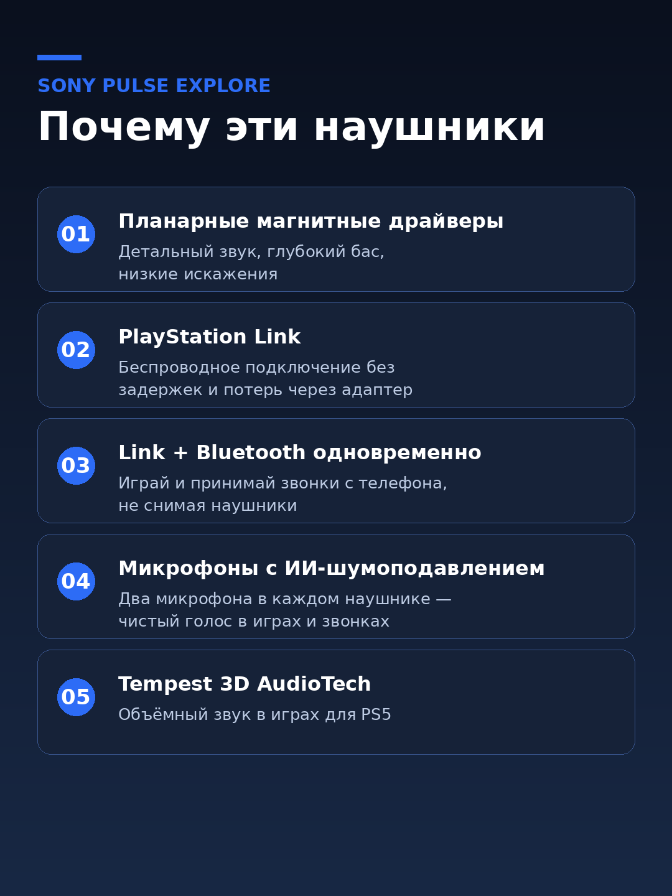
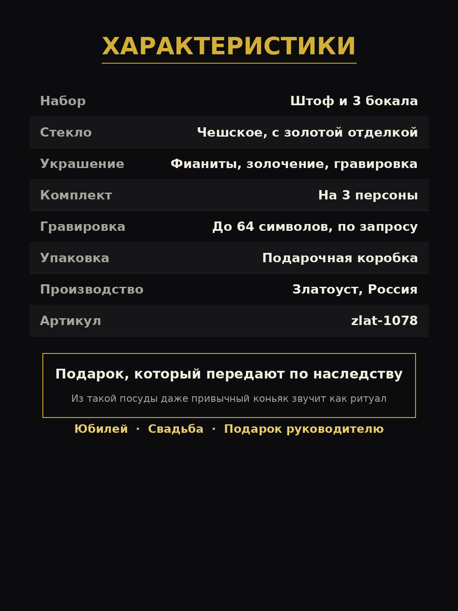

Карточки товаров, которые продают
Дизайн карточек для маркетплейсов: Wildberries, Ozon, Яндекс Маркет
Обложка, преимущества, характеристики — полный комплект под ваш товар
Описание, SEO-ключи, заголовки для ВБ и Озона — к каждой карточке
Палитра и типографика под категорию: электроника, подарки, wellness
Геймпад Sony DualSense
Гейминг · контрастныйБеспроводной геймпад DualSense для PS5/PS5 Pro: адаптивные триггеры, тактильный отклик, микрофон и динамик, зарядка USB-C. Три карточки: обложка, «5 причин выбрать», характеристики.


Для маркетплейсов
SEO-ключи: dualsense, геймпад ps5, дуалсенс купить, джойстик плейстейшен 5, беспроводной контроллер sony, геймпад dualsense оригинал
Заголовок Wildberries: Геймпад Sony DualSense беспроводной для PlayStation 5, белый, оригинал
Заголовок Ozon: Геймпад Sony DualSense беспроводной для PlayStation 5 / PC — адаптивные триггеры, тактильный отклик, белый
Наушники Sony PULSE Explore
Гейминг · тёмно-синийБеспроводные игровые наушники с Lossless-звуком: до 5 часов работы, 15 часов с кейсом, быстрая зарядка. Работают с PS5, ПК и мобильными.




Для маркетплейсов
SEO-ключи: наушники sony pulse explore, беспроводные наушники ps5, игровые наушники с микрофоном, pulse explore купить, наушники для плейстейшен 5
Заголовок Wildberries: Наушники Sony PULSE Explore беспроводные для PlayStation 5 и ПК, белый
Заголовок Ozon: Наушники Sony PULSE Explore беспроводные — Lossless-звук, для PS5, ПК и мобильных, белый
PlayStation 5 Pro
Гейминг · светлыйКонсоль PS5 Pro Digital Edition: 2 ТБ SSD, PSSR-апскейлинг, 4K 120 Гц, Wi-Fi 7, +67% к мощности GPU. В коробке консоль, DualSense, кабели и документация.


Для маркетплейсов
SEO-ключи: playstation 5 pro, пс5 про, консоль sony ps5 pro, плейстейшен 5 про digital, ps5 pro 2tb, купить пс5 про
Заголовок Wildberries: Игровая консоль Sony PlayStation 5 Pro Digital, 2 ТБ SSD, белый
Заголовок Ozon: Игровая консоль Sony PlayStation 5 Pro Digital Edition 2 ТБ — PSSR, 4K 120 Гц, Wi-Fi 7, белый
Массажёр Fujimo IN·YANG F158
Wellness · кремово-оливковыйМассажёр для ног 2-в-1: роликовый массаж стоп (3 акупунктурных барабана) и воздушно-компрессионный охват 360°, тепловая терапия в 2 зонах, 3 программы и 3 уровня интенсивности, 65 Вт.


Для маркетплейсов
SEO-ключи: массажер для ног, массажер стоп и икр, fujimo in yang f158, роликовый массажер для ног, компрессионный массажер ног, массажер с подогревом
Заголовок Wildberries: Массажер для ног Fujimo IN·YANG F158, стопы и икры, роликовый и компрессионный
Заголовок Ozon: Массажер для ног Fujimo IN·YANG F158 2-в-1 — роликовый и воздушно-компрессионный массаж, подогрев, 65 Вт
Коньячный набор Златоуст
Подарок · чёрно-золотойКоньячный набор из Златоуста: штоф и три бокала с фианитами, чешское стекло, ручная гравюра и золочение. Гравировка до 64 символов по запросу, подарочная упаковка, артикул zlat-1078.



Для маркетплейсов
SEO-ключи: коньячный набор, набор для коньяка златоуст, штоф и бокалы для коньяка, подарок мужчине ручная работа, бокалы с гравировкой, коньячный набор подарок
Заголовок Wildberries: Коньячный набор: штоф и 3 бокала с фианитами, Златоуст, ручная работа
Заголовок Ozon: Коньячный набор из Златоуста — штоф и 3 бокала с фианитами, чешское стекло, ручная гравюра, гравировка на подарок